Anypoint DataMapper Transformer Reference
|
Full DataMapper functionality is exclusive to the Mule ESB Enterprise Edition. But MuleSoft wants to give you a taste of what you’re missing! Experiment with DataMapper in the Mule Studio Community Edition (CE) and evaluate this powerful new tool that maps data through a graphical interface. Not only can you develop your full-featured DataMapper application within CE, you can preview your data mappings as well. However, to RUN your application on a Mule server and observe DataMapper in a test or production environment, you must download and use Mule ESB Enterprise with Mule Studio. You also have the option to save and export your Community Edition project so that you can run your DataMapper flow in Mule Enterprise Edition. |
This document serves four purposes:
-
It describes the DataMapper feature.
-
It introduces, via an embedded tutorial, the procedures required to configure a simple data map.
-
It offers detailed information about the feature for reference.
-
It provides information and use cases to illustrate DataMapper’s advanced capabilities.
Feature Description
The Anypoint DataMapper Transformer is exceptionally powerful and versatile compared to the many other transformers that come bundled with Studio. Like other transformers, DataMapper can transform data across formats as well as manipulate payload values. Beyond this, DataMapper can map an input field (such as last_name) to a different output field (such as family_name) and form a composite field (such as full_name), from multiple fields (such as title, first_name, and last_name). DataMapper supports expressions that facilitate conditional value recalculation and enable database queries. It can also retrieve session state information to facilitate conditional message routing.
DataMapper supports:
-
XPath expressions for relational tables and tree-based data structures
-
Lookup tables to augment data during transformation
-
Input arguments, that serve as placeholders within expressions until evaluated at run time to support dynamic processing (for most About DataMapper Formats)
|
CTL2 Transformation Language CTL2 is a powerful, flexible general-purpose data transformation language embedded in the DataMapper component. DataMapper transformations are internally converted into CTL2 for execution, but you can also write your own CTL2 directly. For complete information on CTL2 syntax and capabilities, including a language and functions reference, see the CTL2 Language Documentation. |
Supported Formats
Mule Studio provides a data mapping transformer to facilitate the translation of data to and from any of six formats:
CSV |
XML |
Java |
Map |
JSON |
Excel |
Fixed-width |
Refer to the About DataMapper Formats section below for more details.
DataMapper Configuration
This tutorial assumes that you have already attained basic familiarity with the Mule Studio interface and the concept of Mule flows. If not, take the Mule Studio basic tutorial, the intermediate tutorial, or both. (Together, this pair of tutorials should consume no more than 45 minutes.)
For the simplest use cases, the DataMapper transformer is placed between a flow’s message source (which starts each flow instance by accepting a new message) and whatever building block “consumes” the remapped data (below).
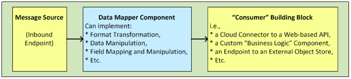
Our demonstration, which consists of a single main flow, employs three building blocks:
-
a File endpoint as the flow’s message source
-
a DataMapper transformer to handle the mapping
-
a Database endpoint to send the output to an external JDBC-compatible RDBMS (below).
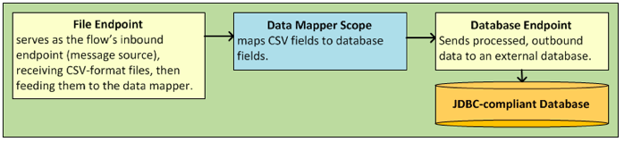
To build this flow, our tutorial will guide you through the following steps:
-
Adding the File endpoint, DataMapper transformer and Database endpoint to the flow
-
Define DataMapper output
-
Configure building blocks
Adding DataMapper to a Flow
-
In the palette, within the group labeled Endpoints, locate the File endpoint (below, left).
-
Drop a File endpoint into the Message Flow canvas.
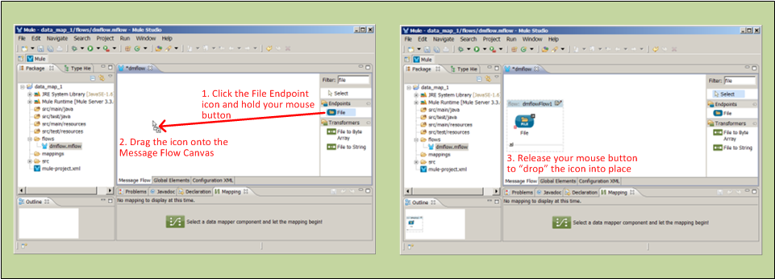
-
From the palette, drag an Anypoint DataMapper Transformer, which resides in the palette group labeled Transformers, and drop it to the right of the File icon (below, left).
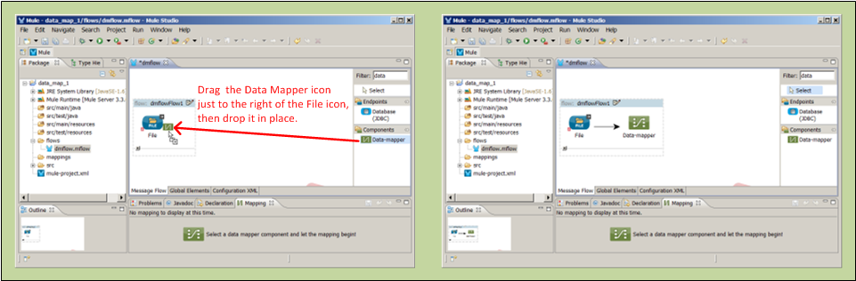
-
Drag the Database endpoint from the palette and drop it immediately to the right of the DataMapper icon.
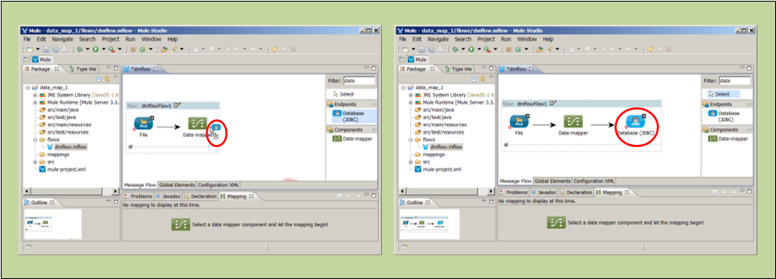
Creating a Data Mapping Flow
The DataMapper feature requires up to three files to hold configuration information:
-
a
.grffile for the attributes that you map -
a sample input file containing at least the field names and a sample record in the input format
-
a sample output file containing at least the field names and a sample record in the output format
One or both of the last two files may not be necessary if you use the Java, or Map formats for input or output. See: About Sample Format Files.
Use the configuration wizard to guide you through the process of creating your Data Mapping Flow.
-
Click the DataMapper icon on the canvas to display the Data Mapping tab (below).
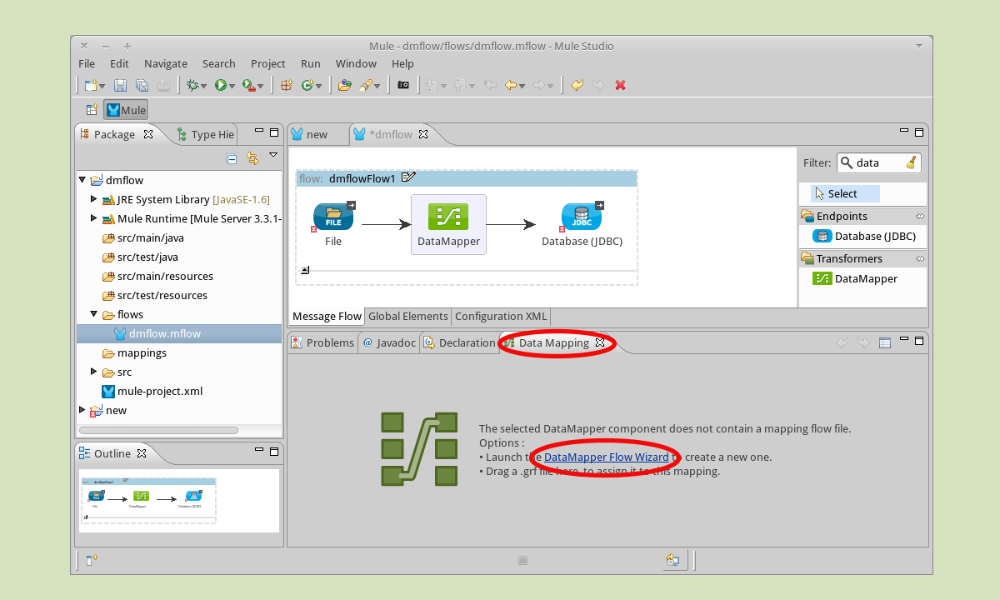
-
Launch the configuration wizard by clicking the link labeled DataMapper Flow Wizard (above), or by double-clicking the DataMapper icon on the canvas.
-
In the Data Mapping Flow pop-up dialog (below, left), type a descriptive name for your data map in the Name field. Note that the wizard automatically converts the name you enter into a file with the extension .grf.
-
Optional: In the Description field, type in details to document your flow.
-
Click Next.
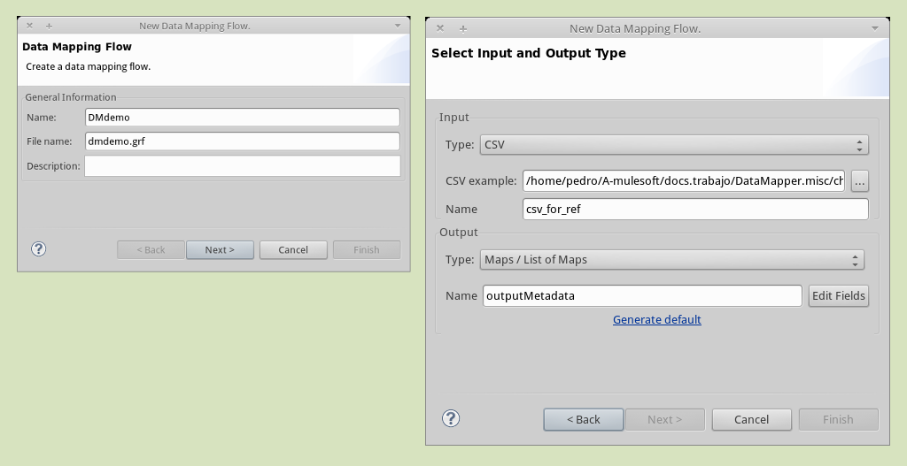
-
In the Select Input and Output Type panel (above, right), complete the following sub-steps:
-
In the Input pane, use the drop-down list in the Type field to select
CSV. -
Click the ellipsis (…) button to the right of the CSV example field and browse for your sample CSV file which contains both:
-
a set of field names that matches those used by the incoming data files (
title,first_nameandlast_name) -
a sample set of field values (fictional titles and names), which the datamapper transformer will use to illustrate the mappings you specify.
Notice that once you have specified the input file, the Name field within the Input pane automatically displays the filename you specified, but without the filename extension.
-
-
In the Output pane, use the drop-down list in the Type field to select
Maps / List of Maps. Note that you cannot specify a sample file for the Maps format; instead, you must specify output fields through the wizard, as detailed by the remaining steps in this procedure. -
Click the Edit Fields button to the right of the Name field in the Output pane.
-
In the Edit Map Fields panel, click the plus
 button above the Name column (below).
button above the Name column (below).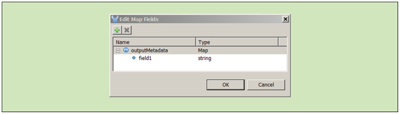
-
Click
field1(above), and, for the purposes of this demonstration, typefull_name(below). Since we are only adding one field for this demonstration, click OK (below), then click Finish on the Select Input and Output Type panel to complete the wizard-based set up.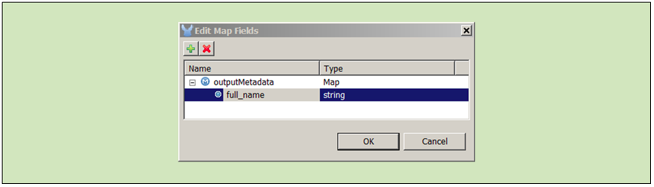
-
Refining DataMapper Output
After you have specified the input and output fields, you must specify which fields the DataMapper should redirect, combine, or enhance. For this demonstration, we map three input fields (title, first_name, and last_name (from the CSV input file), to the output field named full_name).
To specify these mappings, complete the following steps:
-
If the message flow canvas is not visible within the Mule Studio application window, click the Message Flow tab to display the canvas (below).
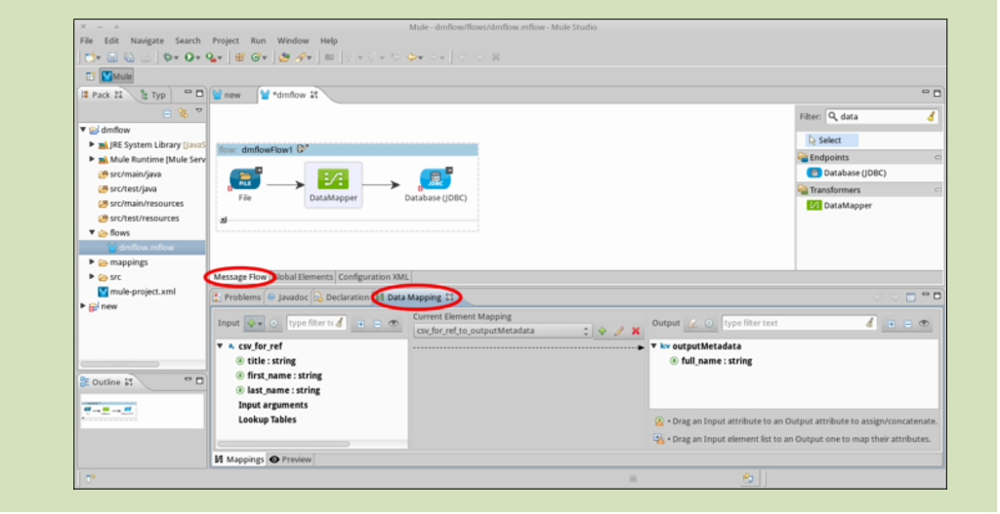
-
If the graphical mapping editor is not visible (as pictured above), click the Mappings tab to display it.
-
Click
title : stringand drag it on top offull_name : string(below).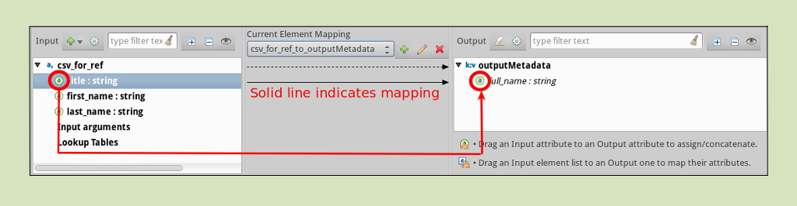
-
Repeat the “drag-and-drop” technique employed for the previous step to map
first_nameandlast_nametofull_name. -
Refer to About Advanced Mapping Editorbelow for instructions on how to see more details about the data being mapped.
If a mapping is invalid, DataMapper displays a small, red "x" on top of the icon of the invalid output fields (below, right).
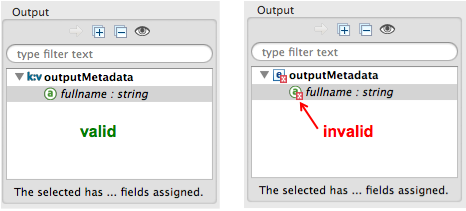
Configuring Building Blocks
Before you can run your DataMapper-enabled Mule application, you must complete the configuration of the various building blocks in your application flow.
Configuring the DataMapper Transformer
-
Click the Properties icon on the upper right of the Data Mapping tab (below, top) to display the Pattern Properties panel for the DataMapper transformer (below, bottom). Note that Mule automatically populated most of the fields from information you supplied in the DataMapper flow wizard.
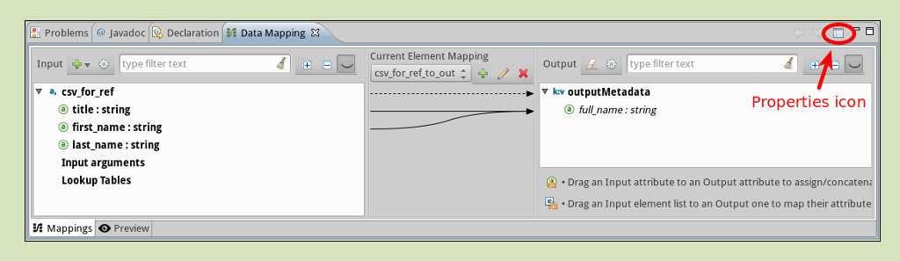
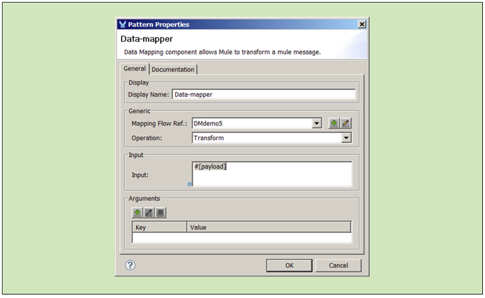
-
Optional: Modify the existing values by overwriting the field contents.
-
Optional: Click the plus icon
in the Arguments pane of the Properties panel to add arguments for later use in expressions and rules.
About Arguments
Add fields to a record by adding arguments to a Mule expression. Typically, an argument can draw on metadata stored in a message header (for instance, a timestamp representing the moment a client request was placed), or it can attach a placeholder (i.e., a Session Property) to call a piece of read-only Mule state information at key points during the message processing session. For example, you can add a timestamp just before the payload is dispatched from the flow.
About Rules
Mappings – which can be expressed graphically as demonstrated above, or through expressions – always map a single field (even though it may be a composite of multiple fields) to another single field. Multiple mappings allow you to map multiple fields to the same output field.
Rules facilitate complex mappings from multiple sources, especially hierarchical parent-child data structures. Rules use Xpath expressions, rather than CTL2 statements, so you can take advantage of Xpath’s powerful conditionals to extract and calculate field values.
Configuring the Endpoints
Since the set up information required for specific file resources and databases tends to vary from case to case, we will not cover the configuration of those building blocks in this section. For detailed information, see the following:
| This demonstration flow uses the File endpoint, which dispatches files one-by-one from a file storage system (typically a hard disk), then deletes the just-dispatched file to avoid inadvertent double processing. Take Care to use only “expendable” files when testing this demonstration flow. |
Advanced Use Cases
In advanced use cases, output from the DataMapper transformer can be consumed by many different types of Mule building blocks or processing blocks. Just a few of the possible scenarios appear below.
Advanced Use Case 1
You can use an Anypoint Connector to send remapped data to a Web-based API such as SAP or Salesforce (below, left). Alternatively, employ a Database (JDBC) endpoint to dispatch remapped output to an external relational database, where it might be used in a query (below, right).
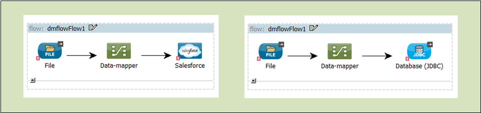
Advanced Use Case 2
Write a Groovy, Javascript, Python, or Ruby script to apply custom-coded business logic to the output (below, left). Alternatively, record remapped data to a file server using FTP or SFTP (below, right).
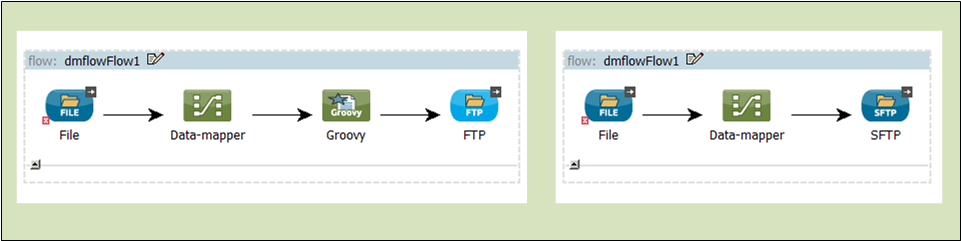
Advanced Use Case 3
You have the option to intersperse additional building blocks within the message source > DataMapper > “consumer” building block sequence. For instance, place a filter between the message source and the DataMapper transformer to validate incoming messages. Or, place a logging component after the DataMapper transformer – and ahead of the “consumer” building block – so as to send a copy of the DataMapper output to the system console for inspection.
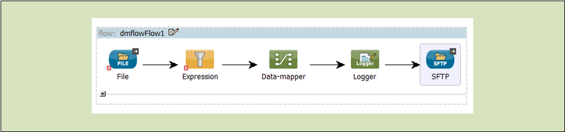
Reference
The following sections offer detailed information about the various elements of the DataMapper transformer.
About DataMapper Formats
Mule Studio provides a data mapping transformer to facilitate the translation of data to and from any of six formats. The following table describes each format as well as common use cases. The full interchangeability of these six formats ensures that you can find a suitable pairing for just about any corner case.
| Format | Description | Typical Endpoint Use Cases |
|---|---|---|
CSV |
A group of flat-file formats that use any of three delimiters (comma, semicolon, and pipe) to separate data fields. When a comma is the delimiter, the |
Inbound: The FTP, SFTP, UDP, and File endpoints are often used to feed data from “spreadsheet-like" structures. HTTP/S, Servlet and other endpoints are also applicable. |
XML |
Data is represented in the tree-based XML format, which is built around nodes, each of which may incorporate multiple attributes and child elements. Typically this format uses the |
Inbound: File (FTP, SFTP), HTTP/S, SOAP |
Java |
Java Beans, Java objects, or collections of Java objects capable of exporting fields for mapping. |
Inbound: Any Java object created through scripting or returned from a connector, etc. |
Map |
A dictionary-like structure for a collection of maps, where each map contains a unique key and its associated values. These arrays are often used to return the results of database queries. |
Specify through the wizard. |
JSON |
The JSON (JavaScript Object Notation) format derives from JavaScript and is generally used to represent complex data structures. It is text-based and designed to be read with relative ease by humans. |
Inbound: HTTP/S (REST request) |
Excel |
A flat-file format generally used to encapsulate spreadsheet data. It uses the |
Inbound: Typically, FTP, SFTP, UDP, and File endpoints; IMAP and POP3 when sent as an email attachment. |
Fixed-width |
Data stored as a string and organized into fixed-width columns, with padding if necessary. DataMapper can divide the columns into fields according to the character lengths provided by the user. This format is typically found in text files; its minimum processing requirements make it useful for working with very large datasets. |
Inbound: The FTP, SFTP, UDP, and File endpoints are often used to feed data from fixed-width structures. HTTP/S, Servlet and other endpoints are also applicable. |
About Sample Format Files
Four of the six data formats supported by DataMapper rely upon patterns contained in sample files to specify input and output fields. Those formats are: XML, JSON, Excel, and CSV (i.e., “About Delimited Files”). For Java and Map, the other two formats, you specify fields through the DataMapper Flow Wizard or the controls on the Mappings tab.
The table below summarizes the syntax and file types used to specify input and output fields for the four DataMapper formats that use pattern files. The subsections below the table provide additional information, as necessary.
| Format (extension) |
Typical syntax | ||
|---|---|---|---|
CSV |
|
||
Excel |
The syntax is complex, often with extensive metadata in the file header. Fortunately, you need not manage the raw syntax because you can populate the spreadsheet within Excel’s graphical interface, save the file in the .xls format, then specify the file through DataMapper’s wizard or Mappings tab. |
||
JSon |
|
||
XML |
|
||
Fixed-width (no default extension) |
In the example below, the |
About Delimited Files
Although the DataMapper interface groups these file types under the heading “CSV file,” this term actually refers to three file types, each characterized by a different field delimiter: comma, semicolon, or pipe. In all cases, carriage returns separate records. When “comma” is the delimiter, the .csv filename extension applies.
Typically, the file’s field names are listed in the first line of the file, and these are ignored when data records are listed. Thus, the file used for this demonstration contains the following four lines:
1
2
3
4
title,first_name,last_name
mr,frederick,jones
mrs,petra,markham
mr,alan,johnson
Only the following three lines will be listed as data:
1
2
3
mr,frederick,jones
mrs,petra,markham
mr,alan,johnson
Advanced Reference
The following sections offer detailed information about the advanced features of the DataMapper transformer. Four use cases demonstrate how DataMapper can be used to design complex mappings.
About Advanced Mapping Editor
Use DataMapper’s Advanced Mapping Editor to examine mappings in greater detail.
-
Click the edit icon (small pencil) in the Structure Mapping column of the Mappings tab.
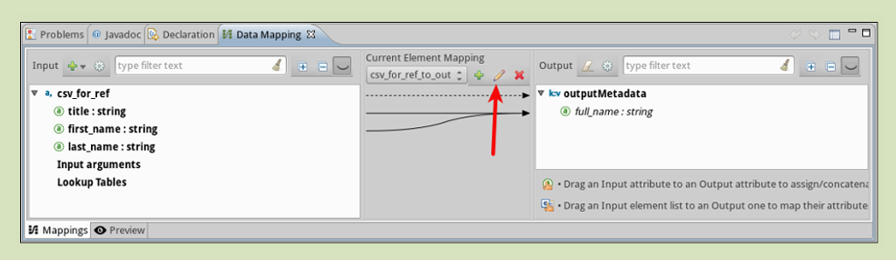
-
In the Edit Mapping pop-up dialog that appears, click on the Advanced Mapping Editor link.
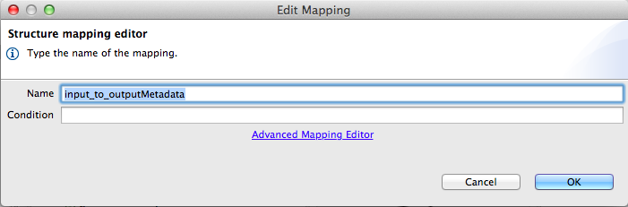
-
In the Tranformations tab of the Advanced Editor window, click
full_namein the Output column (on the right) to display the lines that indicate existing field mappings. This action also highlights the fields in the Input column which are mapped to thefull_nameoutput.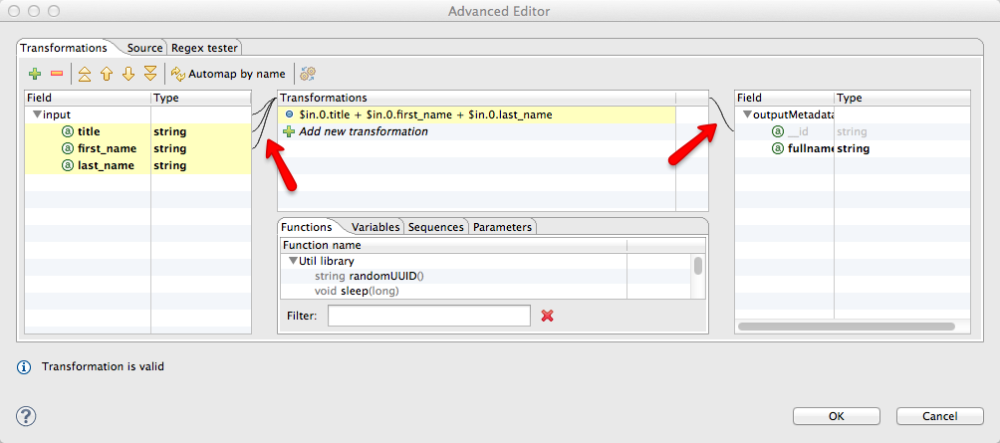
-
Click the Source tab to view the CTL2 transformation language code that is stored in the associated
.grffile. (For complete information on CTL2 syntax and capabilities, including a language and functions reference, see the CTL2 Language Documentation.)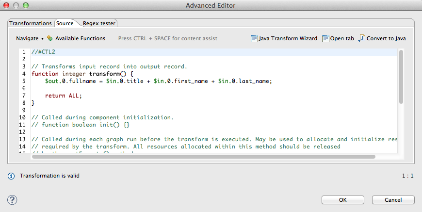
-
After you have finished examining the various tabs in the Advanced Editor, click OK to return to the Edit Mapping dialog, and again to return to the Mule Studio application window.
About XPATH Mapping
Using the tools available on the Mappings pane (below), you can add rules that use XPath expressions to compute or extract values from all the data formats supported by DataMapper (except the “flat-file” data structures: CSV and Excel).
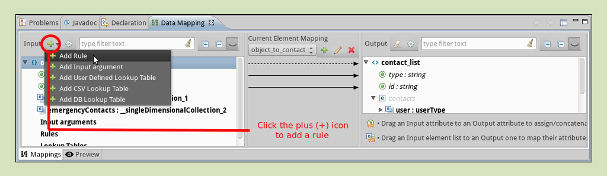
Conveniences include:
-
drag-and-drop expression building
-
syntax error flagging
-
auto-completion “hints” (which you display by typing ctrl-space, as per below)
About Lookup Tables
Lookup tables facilitate mappings from one value to another on the basis of lookup table definitions. For example, if one format defines priority using 1, 2, 3, while another format uses L, M, H, the user can create a lookup table that maps 1 to L , 2 to M and 3 to H. You add lookup tables by right-clicking the Lookup Tables item in the mappings panel (see below).
DataMapper supports three types of lookup tables to facilitate the extraction of data fields from various data sources, including external databases.
-
User-defined: This simple type of lookup table provides an input area where you manually create a keyed data table with one or more fields. The fields are defined as the unique key to fetch or retrieve the value (below).
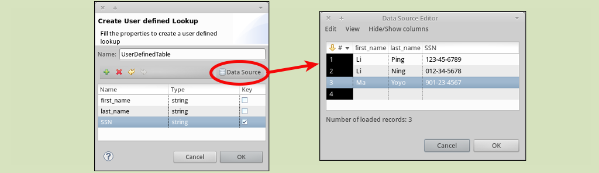
-
CSV: This type of lookup table requires that you specify a About Delimited Files to supply data for the lookup.
-
Database Lookup: This type of lookup table requires that you create a Database Connector so that DataMapper can lookup values in an external database.
|
A snippet for finding field values in a lookup table follows this general form:
This particular function searches for the first record whose key value equals the value specified in the By writing expressions in CTL2, you can map to other records using the same metadata. To obtain the value of the field, add “.” to the expression. For complete information on CTL2 syntax and capabilities, including a language and functions reference, see the CTL2 Language Documentation. |
About DataMapper Testing
DataMapper’s testing feature provides design-time visibility into mapping results. Write Regular Expression (RegEx) queries to locate specific strings within lookup tables or returned search results.
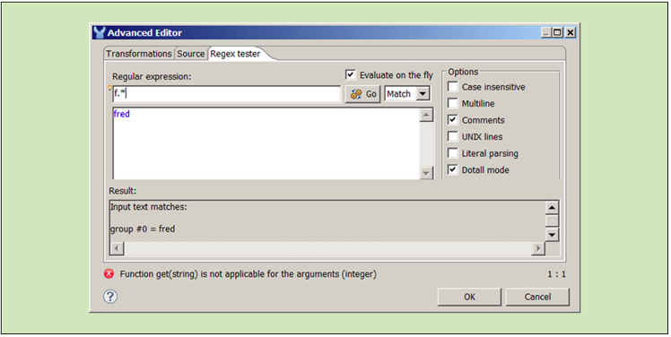
See Also
-
The Data Mapping View provides a quick visual reference for the different DataMapper dialog boxes.
-
Obtaining a Preview of Mapped Data lets you test your DataMapper design against different sample inputs, without executing an entire Mule flow.
-
Mapping Elements Inside Lists illustrates how to work with complex nested data structures.
-
Output Fields' Assigned Scripts explains how to view and update the code that computes the value of each output field.
-
Using Input Arguments explains how to pass data into your DataMapper in addition to the message in your flow.
-
Editing Metadata describes how to change the data definitions for your DataMapper sources and targets.
-
Duplicating Data Structures in Map Format explains a useful editing shortcut for quickly populating source and target metadata where the input and output formats are identical or very similar.
-
Using DataMapper For Flat-to-Structured and Structured-to-Flat Mapping explains and provides examples on how to map between flat and structured data formats.